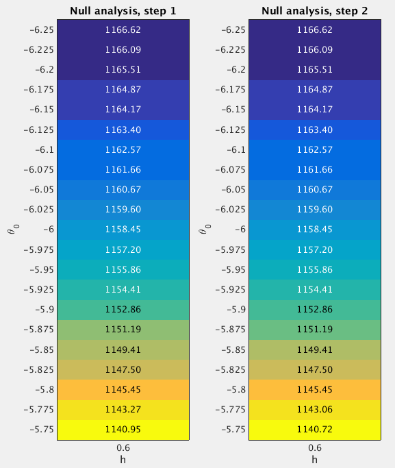

29.2 GSEA Round 2
Last updated: 2016-11-22
Code version: 42983f4235a819ab554d64a74504d1671fee537a
29.2.1 Fit the null model
From the Round 1 null analysis (Section 29.1), I found that almost 99.5% posterior mass is concentrated on the setting (h=0.6, theta0=-6). In Round 2, I used a finer grid. Specifically, I used the grids theta0=(-6.25:0.025:-5.75)' and h=0.6 when fitting the null model. I estimated the (unnormalized) log importance weights (“pseudo-likelihoods”) for all 21 sets of (h,theta0) under null.

After normalizing the log “pseudo-likelihoods” (logw.step*) to posterior probabilities (posp.step*), we can see that almost 99.99% posterior mass is concentrated on the settings h=0.6 and theta0=(-6.25:0.025:-6)'.
theta0.index <- as.character(null.df$theta0) %in% as.character(seq(-6.25,-6,by=0.025))
sum(null.df$posp.step2[theta0.index]) ## [1] 0.999951729.2.2 Fit the enrichment model
To perform GSEA, I set h=0.6 and theta0=(-6.25:0.025:-6)', since the null analysis suggests that almost 99.99% posterior mass is placed on these settings. For the log-fold enrichment parameter, I use the grid theta = (0:(3.8/200):3.8)', based on the Round 1 enrichment analysis (Section 29.1). The following table lists the GSEA results.
Now we compare the enrichment Bayes factors from Round 1 and 2 analyses.